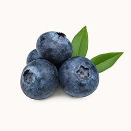
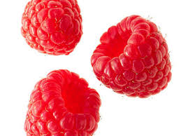

Optimal fruit/pancake combinations
| Blueberries It's the classic pancake fruit. Is a pancake really a pancake if it doesn't have blueberries? |
 |
|---|---|
| Bananas Not everyones favorite, but there's something about the fcombination of banana, butter, and syrup that is just magical. |
 |
| Strawberry Some restaurants like to garnish pancakes with a strawberry or two. Hell naw. Cut up like 50 (okay maybe like 7-8) and load up your pancakes with them. Bonus points if you also have banana on top. |
 |
| Raspberry A bit of a sleeper, but throwing some raspberries inside your pancakes while they cook can definitely give blueberries a run for their money. |
 |